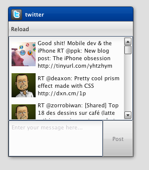
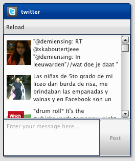

Tutorial Part 4.5: Virtual List¶
This time we will have a look at the virtual widget stuff. The plan is to remove the normal List and use the virtual List. Using the virtual list has a big advantage when we have to render a huge count of items. The virtual list only creates widgets for visible items. This saves memory and execution time. As a base we use the already known twitter client we built in the former tutorials.
Change the instantiation¶
First, we have to use the virtual List instead. Open the twitter.MainWindow class and search for the list instantiation:
// list
this.__list = new qx.ui.form.List();
this.add(this.__list, {row: 1, column: 0, colSpan: 2});
And create a virtual List instead:
// list
this.__list = new qx.ui.list.List();
this.add(this.__list, {row: 1, column: 0, colSpan: 2});
Now we use the virtual List instead of the non virtual List. But before we can use the twitter application with the virtual List we have to configure the usage with a delegate.
Configure the virtual List¶
The current implementation uses the list controller to bind the tweets with the list. This makes it easy to reuse the delegation implementation, because the delegation interface from the virtual List has the same methods for bindItem, createItem, configureItem and filter. We only need to remove the controller stuff and use the virtual list instead. The controller is not needed anymore, because the virtual list has its own controller implementation. Open the twitter.Application and search for the controller instantiation:
// create the controller
var controller = new qx.data.controller.List(null, main.getList());
controller.setLabelPath("text");
controller.setIconPath("user.profile_image_url");
controller.setDelegate({
configureItem : function(item) {
item.getChildControl("icon").setWidth(48);
item.getChildControl("icon").setHeight(48);
item.getChildControl("icon").setScale(true);
item.setRich(true);
}
});
Instead of the controller use the virtual List:
// setup list binding
var list = main.getList();
list.setItemHeight(68);
list.setLabelPath("text");
list.setIconPath("user.profile_image_url");
list.setDelegate({
configureItem : function(item) {
item.getChildControl("icon").setWidth(48);
item.getChildControl("icon").setHeight(48);
item.getChildControl("icon").setScale(true);
item.setRich(true);
}
});
Now we have replaced the controller with the virtual List and reused the delegate implementation. We have only added one line to configure the default item hight. This is necessary, because the virtual List has no auto sizing for the item height. This is due to the huge count of model items.
Update list binding¶
Finally, we have to adapt the binding between the twitter service and the virtual list. The virtual list always needs a model instance so we need to adapt the current binding:
service.bind("tweets", controller, "model");
We only use a converter which returns an empty model when the service returns null:
service.bind("tweets", list, "model", {
converter : function(value) {
return value || new qx.data.Array();
}
});
Now we only need to run the generator to resolve the new dependencies:
The virtual List supports some more features like grouping, for additional details have a look at the virtual demos. As always, the code of the tutorial is on github.